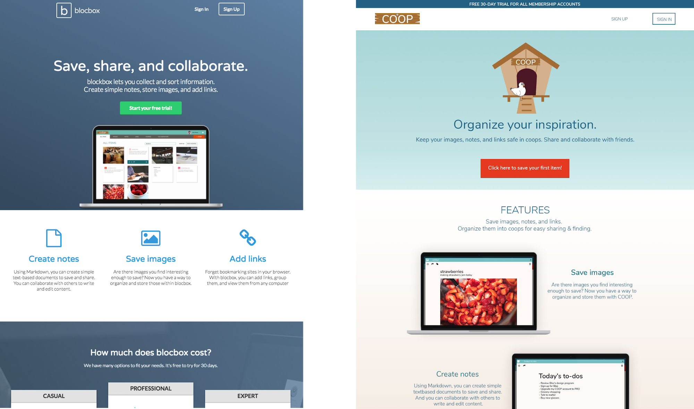

a new set of wings
The goal was to rebrand blocbox from an office tool into software that would be used beyond the cubical.
Who's Out There?
Since there are quite a few similar services out there, we focused on three similar competitors: box, Google Drive, and Dropbox.
Box, Google Drive, and Dropbox are positioned for and are targeting individuals and businesses. Their differences are in their display and some features:
Blocbox is also targeting individuals and businesses. Our goal was to stand out by taking a more playful approach.
But first, what do the people want?
I conducted a survey to better understand our potential users. Looking what devices they use, how and what they save, and where, I was able to pick up on minor annoyances and complaints regarding our competitors, allowing me to identify challenges and potential solutions to test. The respondents, while sharing challenges, also proposed solutions. Solutions that we could test through the rebrand.
Who Are They?
information architecture
Mapping
Flows
iterations & wireframes
Sketching to Lo-Fi

branding
Logo Formation
Logo & Icons
Colors
Typography
- H1 Nunito
- H2 Nunito
- H3 Nunito
- Body Lora
prototype
Landing Page
User Onboarding
The user onboarding and sign-in sections are simple and similar. We made it easy to sign up or log in through social network sites.
Dashboard
Membership
Adding content
To add content, the user will click on the “Add +” call to action. Once clicked, modal windows will appear. Users have a choice of adding an image, notes, or a link to an external site.
what i leared from this experience
Dashboards are very personal. Most users wanted the ability to customize how it looked - colors and background.
Your taste is less important than the user’s style preferences. I had created two versions - one that I loved and the other, which every person that was surveyed and interviewed preferred. It was a sobering experience. But, we have to give the people what they want, despite our own personal preferences.